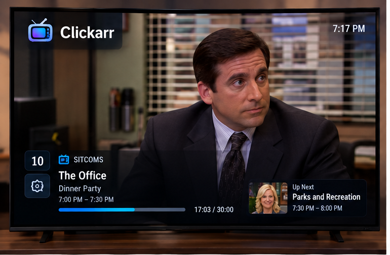
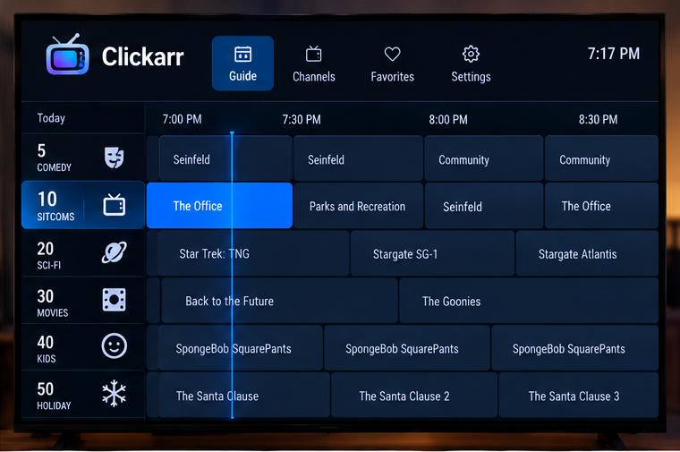
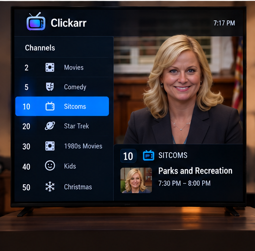
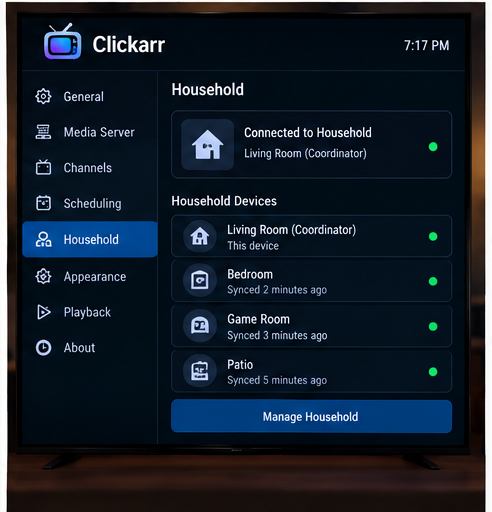
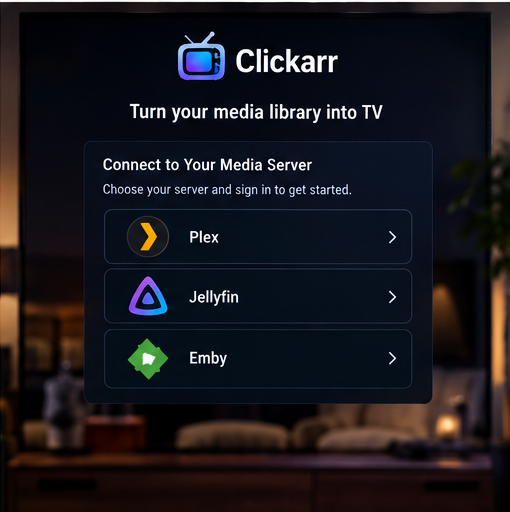

Clickarr gives your Plex library a channel lineup, a program guide, and a remote. Something is always on. Just change the channel.

Media servers make you browse, pick, and press play every single time. Clickarr brings back the part of television that was actually good: turning it on and seeing what's on.
Open app → browse library → choose title → choose episode → play
Open app → something is already playing → change channels → watch
Build channels out of what you already own. Give each one a number, a name, and a schedule. Then tune in.
Channel 10 · Sitcoms 7:00 PM The Office 7:30 PM Parks and Recreation 8:00 PM Seinfeld 8:30 PM Community Tune in at 7:17 PM and you land 17 minutes into The Office. Leave, come back at 7:52, and Parks and Rec is 22 minutes in.
Design mockups the app is being built to. A real program guide, a channel list, and a household view for homes with more than one TV.

A real grid with half-hour columns and a now-line. Up and down move between channels, left and right through time, OK tunes in.

Your lineup with numbers and icons, and a preview of what each channel is airing right now.

Several TVs share one lineup and agree on the schedule, over your own Wi-Fi. No extra server, no cloud account.

Sign in to Plex and start building channels. Jellyfin and Emby are planned after the first release.
A single Android app that talks straight to your media server. The decisions that shape it:
Clickarr never proxies media. Your server keeps doing direct play or transcoding; Clickarr asks for the right item at the right offset.
A channel is a function from time to program. Every TV computes the same answer from the same lineup, so nothing drifts and nothing needs syncing in real time.
TVs pair over the LAN with a PIN. One coordinates, the others cache the lineup and keep working when it's off.
Each TV signs in to Plex itself. Household sync shares channels, never credentials.
No Google Play Services anywhere. Sideload the APK on a Fire Stick and it just runs.
Clean-room, permissively licensed, built in public with architecture decisions written down.
Follow along on GitHub. Releases will appear there as sideloadable APKs.